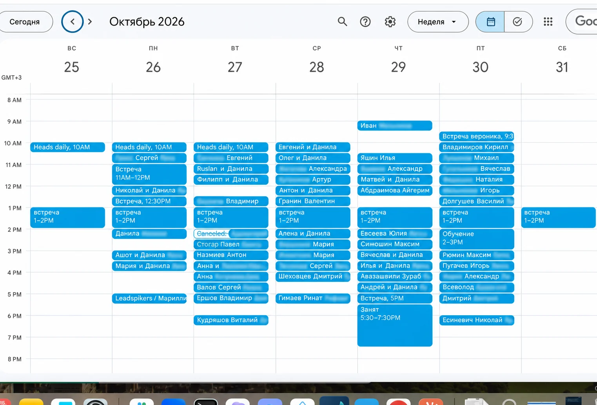

018 мин
Поиск компаний
Кого искать
Как определить компании, которым потенциально нужен ваш продукт, и не тратить ресурсы на случайную базу.Исходные данныерабочая таблица
Бесплатный мини-курс в Telegram
За четыре коротких урока вы увидите, как компании находят целевых клиентов, выходят на ЛПР и превращают холодные контакты в деловые встречи.
4 урока по 5–8 минут
Первый урок — сразу в Telegram

Не мокап: фрагмент реальной рабочей недели
Программа
Один урок — один шаг системы. За 30 минут пройдёте путь от выбора компаний до запуска диалогов.
Поиск компаний
Поиск ЛПР
Коммуникация
Внедрение
Результат
За полчаса у вас сложится цельная картина B2B-аутрича. Вы поймёте, подходит ли этот канал вашему бизнесу и где сейчас теряются потенциальные встречи.
Открыть мини-курс в Telegram↗Четыре коротких урокаБез длинных вебинаров и лишней теории
Цельная системаОт выбора компаний до диалога с ЛПР
Удобно в TelegramСмотрите в удобном темпе с телефона